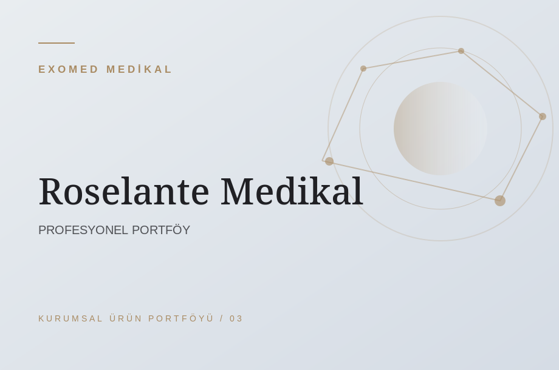

ÜRÜN GRUPLARI
Profesyonel ihtiyaçlara odaklanan koleksiyon.
D-MED / T-LAB, Trifarma (Sunekos, HyalDew) ve Roselante ürün portföyüne yönelik kurumsal bilgi sayfaları. Belge ve stok bilgilerini ekibimizden öğrenin.
PORTFÖYÜMÜZ
Ürün aileleri ve markalarımız.
Kategori ve marka bazında inceleyin. Bu sayfa profesyonel bilgilendirme amaçlıdır.


Görseller, Exomed tarafından hazırlanmış temsili tasarımlardır; üreticilerin gerçek ambalaj fotoğrafları değildir. Gerçek ürün fotoğrafı ve teknik dokümanlar kullanım izni doğrulandıktan sonra yayınlanmalıdır. Ürün stok ve yasal durum bilgileri için şirketle iletişime geçiniz.